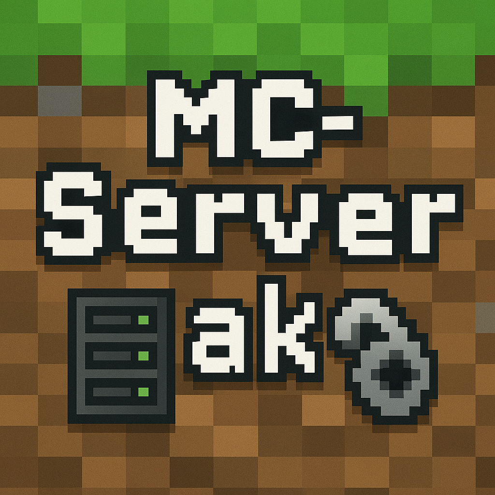

このサイトは、さまざまなリソースやツールを提供しています。ぜひご活用ください。

MC-ServerMakeは、Minecraftサーバーを簡単に作成・管理できるツールです。
とてもSF風なUIです。操作はコンソールですが、番号を入力するだけなので、意外に簡単です。
まだ開発中の機能もありますので、今後のアップデートにご期待ください。
MC-ServerMake ver2.0をダウンロード(zip)ファイルを展開して、start.batをダブルクリックし、文章に従ってください
リアルタイム匿名チャットアプリケーションだゾ。
スレッドを作ってチャットができますぞ！
みんなでお絵描きできるボードだゾ。